|
В окрестностях поселка Отхара Гудаутского района сохранилось несколько древних памятников: церковь около села Звандрипш, руины храма в Амбаре и пещерный средневековый монастырь крупнейшего в Абхазии скального замка.
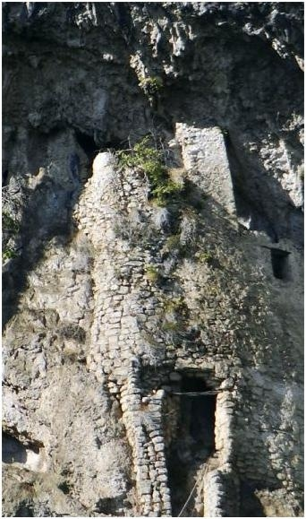
Путь к подножью скалы начинается у Форелевого хозяйства, расположенного на берегах Черной речки и ведет по самшитовому лесу к истокам Мчишты. Из-за повышенной влажности деревья, камни и земля поросли мхом. Бурные холодные воды Черной речки берут начало в крупнейшем карстовом источнике Кавказа. Этот воклюз и подземные пещеры Гагрского хребта привлекают внимание спелеологов со всего мира.Громада отвесного утеса, покрытого зеленью, будто бы вырастает из-под ног. Внешняя стена скального замка выложена из грубо обработанных камней на прочном растворе. На высоте около 50 м видны ряды отверстий разных размеров – окна многочисленных келий, до которых невозможно добраться без специального альпинистского снаряжения.Вход в замок находится высоко от земли, попасть туда можно по приставной деревянной или навесной веревочной лестнице. Ширина внутреннего помещения не превышает 2-3 м, высота – более 15 м. В верхней части уцелело сводчатое перекрытие.Долгое время считалось, что скальный замок близ поселка Отхара – произведение самой природы. Однако исследования 80-х годов XX века доказали: именно люди, расширив и соединив естественные карстовые пещеры, соорудили эту неприступную крепость.
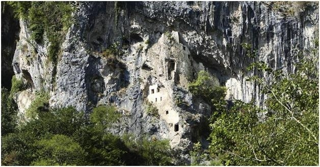
Доподлинно неизвестно ни время постройки, ни точное назначение этого объекта. По одной из версий, замок построен в XII веке как убежище для абхазской знати во время пиратских набегов с моря. Об этом косвенно свидетельствует ряд бойниц, направленных на тропу. В мирное время замок облюбовали монахи-аскеты, которые предположительно занимались разведением рыбы. На другой стороне ущелья, на скальном гребне, нависающем над современным форелевым хозяйством, они построили мощную цитадель, которая в период становления Абхазского царства в VIII веке охраняла дорогу на Северный Кавказ. Таким образом, древний наскальный комплекс был одновременно религиозным и военным объектом.В более поздние времена в замке поселились разбойники, и еще долгое время после их ухода местные жители не решались подняться на скалу. Лишь в конце XIX века абхазский князь Михаил Шервашидзе (Чачба), владетель села Отхара, с помощью нескольких десятков людей соорудил мост и сумел пробраться в нижние жилые помещения.Научное обследование Мчиштинского пещерного замка началось только в 1958 году. Археологи с помощью альпинистов проникли внутрь, обследовали все помещения и извлекли несколько предметов бытового назначения, относящихся к средневековой эпохе.
Цандрипшский Храм
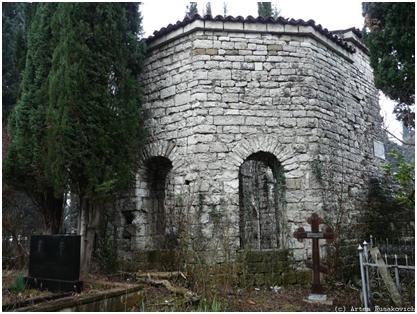
Один из древнейших христианских храмов Абхазии, построенный в VI-VIII вв., сохранился недалеко от берега моря, по ул.Октябрьская (главной улицей Цандрипша), в правобережной части поселка. Руины базилики дошли до наших дней не сильно разрушенными (отсутствуют лишь своды), в советское время их законсервировали реставраторы. Рядом с базиликой выросло местное кладбище, уставленное, как гигантскими свечами, высокими кипарисами.
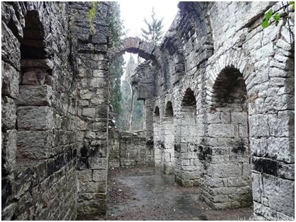
Храм в селе Поквеш
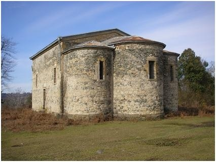
Базиличный Храм относится к эпохе царствования императора Юстиниана Предположительно IX-X в. Храм посвящен Святому Георгию.
Большое развитие получает в Абхазии церковное строительство. На сравнительно маленькой территории было выстроено значительное количество христианских Храмов, что свидетельствует, в частности, о густоте тогдашнего населения края.
Новоафонский монастырь
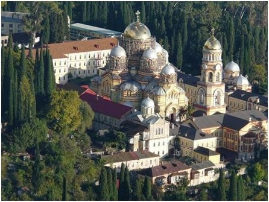
В 1874 году на новоафонскую землю прибыли русские монахи Пантелеймоновского монастыря греческого Афона. Они собирались возвести новый монастырский комплекс вблизи церкви Симона Канонита. Средства на строительство выделяло царское правительство.
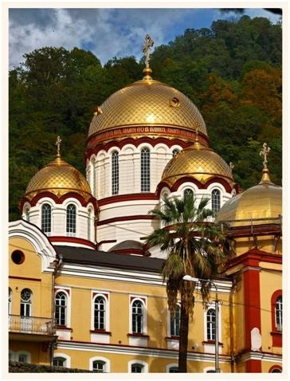
Начиная с 1875 года, 25 лет строился комплекс. Согласно проекту архитектора Н. Никонова, сегодня собор святого Пантелеймона стоит на Новоафонской горе на 75 м над уровнем моря. Вокруг него образуют прямоугольник двух и трёхэтажные монастырские корпуса. А звон 50 метровой колокольни до сих пор звучит по всей округе.
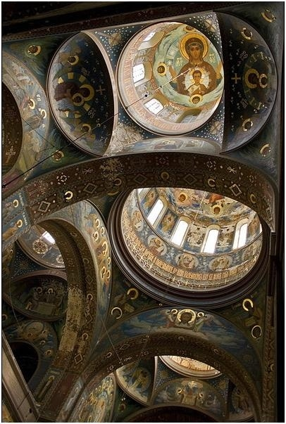
Роспись стен собора проводилась с 1911 по 1914 год. Работу выполняли лучшие мастера того времени. Эскизы рисунков выполнил А. В. Серебряков. Непосредственно росписью стен занимались 16 художников из Палеха и Москвы под руководством М. В. Молохова.В 1888 году на ход работ приезжал посмотреть император Александр III. Чтобы увековечить это событие, на месте встречи императора и настоятеля собора бы заложена часовня. Дорога, по которой Александр III прошёл от церкви Симона Канонита до строящегося монастыря, была названа «царской аллеей» и обсажена стройными кипарисами.Постепенно Новоафонский монастырь, в котором жили 700 монахов, превратился в крупнейший религиозный центр Черноморского побережья Кавказа. Со временем монастырь открыл подворья в Петербурге, Туапсе, Ейске, Новороссийске, Сухуме, Пицунде и высокогорном абхазском селе Псху.Новоафонские монахи не бездельничали. В городе построили пристань, в 1902 году – первую в России гидроэлектростанцию на 120 лошадиных сил, канатную электрическую дорогу для подъёма паломников в часовню на Апсарскую гору, литейно-механические мастерские, известковый и кирпичный заводы, водяную мельницу и прочие предприятия. Кроме того они занимались подготовкой к религиозной карьере местного населения в церковно-приходской школе.
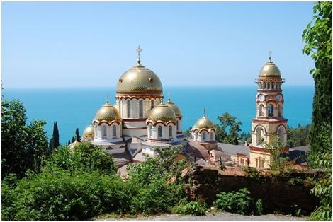
Когда грянула революция, монахи попытались приспособиться к изменившейся реальности и даже создали собственный ревком. Однако новая власть решила, что монастырский ревком занимается антиреволюционный деятельностью и распустила и его и всех монахов. Уникальный религиозный комплекс превратился сначала в совхоз, а потом - в турбазу.С 1993 года началось восстановление Новоафонского монастыря. Вернулись монахи, ведутся ремонтные и реставрационные работы.
Храм Илии Пророка в Агудзерах
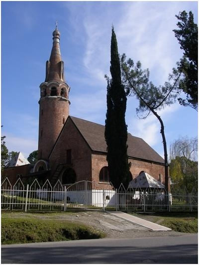
У въезда в поселок Агудзера располагается храм Св. Илии Пророка, привлекающий внимание своей необычной архитектурой. Храм был построен известным меценатом, лесопромышленником Николаем Смецким. На рубеже столетий костромской помещик Николай Николаевич Смецкой приобрел в Сухуме в районе Гулрыпша и Агудзеры несколько участков земли, где устроил дендрарий с редкими субтропическими растениями, санатории для легочных больных. В 1908 году Смецкой на собственные средства построил церковь в стиле модерн. В годы советской власти в храме располагались библиотека, курсы, складские помещения. Возрождение храма началось после грузино-абхазской войны 1992-1993 гг. Храм освятили во имя Илии Пророка, и более 10 лет назад в храме состоялась первая служба. Сейчас ведется активная работа по реконструкции храма, восстановлению церковного хозяйства и возвращению утраченных земель. Силами прихожан из всех районов Абхазии к храму пристроена трапезная и баптистерия (крестильная), ведется восстановление нижней части храма, где велись службы более ста лет назад.Храм обладает древними иконами, а также современными иконами, написанными абхазскими художниками. Примечательно, что в храме Илии Пророка богослужения ведутся на древнеславянском и абхазском языках, а византийские песнопения – на трех языках – древнеславянском, греческом и абхазском.
Сухумский кафедральный собор
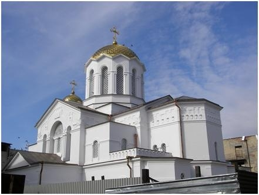
Сухумский Кафедральный собор Благовещения Пресвятой Богородицы был построен в 1915 году на средства греческой общины г. Сухума и до 40-х годов ХХ века являлся Греческим храмом. Кафедральным собором Сухумо-Абхазской Епархии он стал после второй мировой войны. По своей архитектуре собор относится к крестово-купольным, трехнефным храмам, имеющим купол византийского типа. В 80-х годах ХХ века при Митрополите Давиде были проведены ремонтно-строительные работы и у храма появилось несколько боковых пристроек. В связи с чем приходской храм превратился в собор. В настоящее время он является главным собором Сухумо-Абхазской епархии. В этом храме рукополагались все клирики Абхазии, и он являлся местопребыванием абхазских митрополитов. Служба в нем ведется на четырех языках: абхазском, грузинском, церковнославянском и греческом. В храме есть придел Николая Чудотворца, до наших дней сохранилась икона Пантелеймона Целителя с его мощами. Здесь же находилась гробница Иоанна Златоуста, а в 1990 году она была перенесена в место его кончины село Каманы, в одноименный храм, гробница является святыней христианского мира. В храме выставлены иконы с изображениями православных святых - Николая Чудотворца, Симона Кананита, Андрея Первозванного, Иоанна Златоуста, святого Василиска а также копия Иверской Божьей Матери. В настоящее время при кафедре открыта церковно-приходская школа. С 1993 года по сей день настоятелем собора является глава Епархиального совета Сухумо - Абхазской Епархии Священноиерей Виссарион (Аплиаа).
Патриарший собор в Пицунде
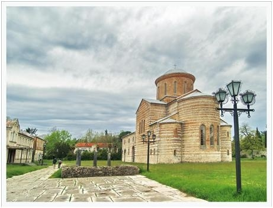
Документированная история Пицунды начинается во второй половине II века н.э., когда римляне построили здесь кастеллу – прямоугольную крепость с башнями по углам и у ворот. Ворота имели закругленный массивный фасад и прямоугольное внутреннее помещение, что было характерно и для воротных башен самого города Рима того времени. Внутри кастеллы раскопаны фундаменты большого каменного здания – претория, свидетельствующего наряду с другими данными о том, что в Питиунте тогда размещалось центральное командование целой группы гарнизонов, находившихся в северной Колхиде. Интересные сведения о событиях у стен Питиунта в середине III века н.э. содержатся в «Новой истории» автора V века Зосима, рассказывающего о том, что после предоставления правителями Воспора готам кораблей для набегов на черноморские берега «варвары, прежде всего, напали на Питиунт, окруженный огромной стеной и имевший весьма удобную гавань. Когда Сукессиан, стоявший во главе местного гарнизона, выступил с бывшими там силами и прогнал варваров, то скифы, опасаясь, чтобы гарнизоны других укреплений, узнав об этом и соединившись с питиунским отрядом, не уничтожили их окончательно, захватили какие могли суда и с величайшей опасностью удалились домой, потеряв под Питиунтом многих из своих. Жители Понта, спасенные... искусными действиями Сукессиана, надеялись, что скифы, отбитые сказанным способом, никогда больше не осмелятся переправиться. Но когда Валериан отозвал Сукессиана, дал ему должность при дворе и вместе с ним занялся делами Антиохии и ее заселением, скифы снова взяли у боспорцев суда и переправились в Азию. Удержав суда и не позволив боспорцам, как прежде, возвратиться с ними домой, они пристали вблизи Фасиса, где, как говорят, было построено святилище фасианской Артемиды во дворце Ээта. Сделав безуспешную попытку взять святилище, они пошли прямо на Питиунт; без малейшего затруднения взяв укрепление и вырезав бывший в нем гарнизон, они двинулись дальше». Это нашествие, однако, не привело к запустению Пицунды. В начале IV века здесь стояли уже не только полностью восстановленные и укрепленные дополнительными башнями стены кастеллы, но появилась и канаба – обширная, окруженная стенами и башнями территория, где располагалось поселение отставных легионеров и их семей. В таком восстановленном виде Питиунт сохранился до наших дней.
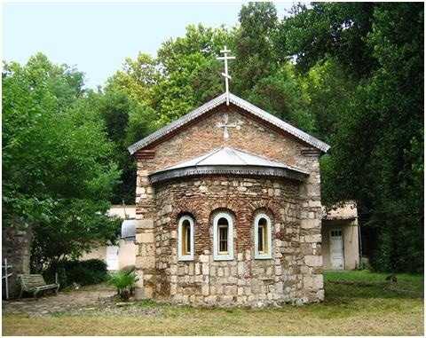
Древняя часовня в Пицунде V-VI в.
В непроглядных зарослях теперь прячутся мощные сегментообразные, прямоугольные и шестиугольные в плане башни, древние стены, облицованные плитняком с четырехслойными поясами кирпичной кладки, различные другие постройки, среди которых зернохранилища, бани, жилые и подсобные помещения. В юго-западной части канабы вскоре после возведения ее стен римляне построили древнейший из известных на территории Восточного Причерноморья христианский храм-базилику. Он представлял собой прямоугольное сооружение с большой семигранной снаружи и изнутри апсидой. Особенностью храма был обход у апсиды, выделенный колоннами и характерный для поминальных римских храмов, посвященных апостолам и мученикам. Именно в этом храме, по-видимому, служил епископ Стратофил принимавший участие в Никейском соборе 325 года н.э. В конце V – начале VI века пол этого храма был украшен богатейшей мозаикой, состоявшей из геометрических орнаментов и сюжетных композиций. Из «последних наиболее типична для позднеримских мозаик по своему оформлению монограмма Христа с альфой и омегой, передающая известную формулу из Апокалипсиса: «Я есть альфа и омега, начало и конец; жаждущему, дам даром от источника воды живой» – и заключенная в круглый медальон, который вписан в трапецию с изображением птиц и растений по углам. Трапеция оформлена листьями аканфа, между которыми расположена поврежденная временем греческая надпись: «В моленье за Оре... и весь его дом». Размер разрушенного пространства в конце имени, допускающий разместить здесь две – три буквы, позволяет предполагать, что в надписи упоминается известный христианский мученик Орентий. Сохранилась легенда о нем. В правление императоров Диоклетиана и Максимиана в конце III – самом начале IV века в борьбе с персами принимали участие семь братьев – христиан, среди которых был Орентий. Когда военные действия были перенесены во Фракию, Орентий совершил подвиг – победил в единоборстве вождя вторгшихся туда варваров. Император предложил Орентию и его братьям в честь победы принести жертву языческим богам и, получив отказ, сослал их сначала в Армению, где их подвергли зверским пыткам, а затем через Трапезунд в Абхазию – в Питиунт. На корабле братья один за другим погибли. Орентию привязали на шею камень и бросили в море, откуда его уже мертвого вынесли на берег ангелы. Последнего брата, Лонгина, похоронили в Питиунте.
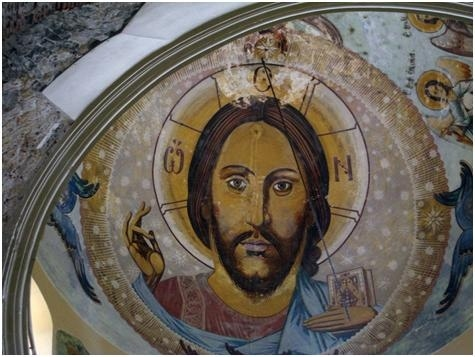
Рядом с надписью среди тех же листьев аканфа сохранилось изображение коровы с теленком, олицетворяющих «семью» христиан, то есть весь христианский мир. Восточное располагалась композиция, изображающая фонтан живой воды, символизирующий христианское учение, а по его сторонам – фигуры оленя и лани с олененком, также олицетворяющие собой «жаждущих христиан» и иллюстрирующие следующие слова 41 псалма: «Как лань охотно стремится к источникам вод, так душа моя стремится к тебе, боже». Пространство между оленями и фонтаном заполнено птицами и ветвями растений. Западнее изображена финиковая пальма с плодами, которую с обеих сторон окружают животные, – здесь уцелели голова лани и птицы. В северной части мозаики изобилуют фигуративные изображения – ягненок, ваза, птицы, растения и т. д., в южной же преобладают геометрические узоры – мотив «пересекающихся кругов», широкие переплетающиеся полосы, образующие сетку, в ячейки которых в шахматном порядке помещены круги и квадраты, узор из переплетающихся ромбов со скрещивающимися изображениями рыб с птицами и т. д. Очень интересно цветовое решение различных фрагментов Пицундской мозаики: монограмма Христа с альфой и омегой – ярко-красная, а ее контур – черный, фон медальона и трапеции – белый, аканфового бордюра – черный, а изображения в нем составлены из белых, красных и коричневых кубиков смальты различных оттенков; фигуры больших оленей переданы объемно-освещенные части их тел составлены из белых кубиков, затененные – из красных. Даже контурные линии здесь передают степень рельефности – массивные части тел оконтурены черными кубиками, тонкие же голени – красными. Мелкие животные переданы одним цветом, а пальма исполнена черными и красными кубиками на белом фоне. В 542 году персы вторглись в Восточное Причерноморье – началась 13-летняя персо-византийская война. В том же году, согласно сообщению византийского историка VI века Прокопия Кесарийского, византийцы, занимавшие Питиунт, «сожгли дома, до самого основания разрушили стены и, без малейшего промедления сев на суда и переправившись на противоположный материк, ушли в город Трапезунд. Правда, они причинили ущерб Римской империи разрушением этих крепостей, но этим же они доставили ей большую пользу, потому что враги не смогли завладеть этой страной; не достигнув никакого результата вследствие разрушения крепостей, враги вернулись в Петру». Весьма вероятно, что древнейший Питиунтский храм был разрушен персами именно во время этого похода. Во всяком случае, когда десятилетие спустя византийцы вновь заняли Питиунт, им пришлось на том же месте строить храм заново. Новая базилика была разделена на три нефа прямоугольными столбами, имела с востока выступающую пятигранную апсиду, а с запада – нартекс. Сочетание пятигранной апсиды с прямоугольными столбами центрального пространства делает вторую базилику Питиунта уникальной, поскольку в других областях христианского мира применялись не столбы, а колонны. Сравнительно тонкие стены указывают на то, что храм имел деревянное стропильное перекрытие. Прямых сведений об истории Питиунта в последующие века. Но в его башнях заметны культурные наслоения второй половины VI – VII веков, а в середине VIII века сюда абхазским князем Константином было послано какое-то письмо: на городище найдена подвесная печать с его именем, написанным греческими буквами. К этому же периоду (вторая половина VI – IX вв.) могут быть отнесены и два других интереснейших архитектурных памятника Пицунды, находящиеся уже за пределами крепостных стен. В пятистах метрах севернее городища, в зарослях, скрываются руины уникальной двухзальной церкви с двумя шестигранными снаружи апсидами. Каменный свод храма, ныне обрушившийся, держался прежде на арках, опиравшихся на центральный столб и пилястры, выступавшие из стен. В христианском мире известны еще только две такие «двойные» церкви. Обе они находятся в Малой Азии и датируются временем от второй половины VI до XI века. Вблизи городища за зелеными остроконечными вершинами кипарисов белеют гладкие светлые стены и купол Пицундского собора – крупнейшего раннесредневекового храма Абхазии. Он относится к типу крестовокупольных, трехнефных и трехапсидных храмов, а размеры его в плане составляют 43,3 на 22,7 метра. Возведен он из камня и кирпича, причем в распределении этих материалов наблюдается определенный порядок. Стены храма внизу от цоколя сложены исключительно каменными блоками, затем кладка приобретает смешанный характер: ряды камня перемежаются с кирпичными прослойками. Чем выше, тем каменные прослойки тоньше, а кирпичные толще. Верхняя часть стен, барабан и покоящийся на нем купол, внутренние опоры-столбы сложены полностью из кирпича неодинакового размера, в арках он тоньше, в несущих частях (устои, стены) – гораздо толще, почти брусовидный. В верхних частях южной и западной стен видны декоративные вставки поперечных кирпичей – в одних рядах одиночных, в других парных. На центральной алтарной апсиде снаружи между окнами выложены толстым кирпичом кресты. Лишь северная стена снаружи совершенно лишена декоративных элементов. На западной стене на уровне хор видны следы заложенной в древности двери, через которую проходили женщины, допускавшиеся к богослужению только через хоры. Позднее ведущая на хоры наружная лестница была разобрана, а внутри возведена другая. Храм полон воздуха и света, его гладкие стены покрыты штукатуркой, некогда украшенной фресками, от которых теперь сохранился лишь пояс медальонов в алтаре, и каждый вошедший сюда сразу ощущает, что храм этот создан для праздничных, торжественных богослужений. В XVI веке в западном помещении была построена усыпальница, стены, и потолок которой были богато расписаны, вероятно, мастерами из Старого Афона. Среди сюжетов росписи особенно интересны сцены «Несения креста», «Распятия» и «Плача». О том, что Пицундский собор был обновлен во второй половине XVI века, а вокруг него были возведены какие-то оборонительные сооружения, говорит сохранившаяся здесь греческая надпись: «Помяни, Господи, раба своего Пароскева Зографа (живописца), который создал это святилище и сей турлеон (башню) во время владычества тирана и католикоса Евдемона. Ты, господи, ведаешь все и исполни их милостью своею». В результате междоусобиц и угрозы нападения со стороны турок в XVII веке резиденция абхазских католикосов, до этого размещавшаяся в Пицунде, переместилась в Гелати. Собор был заброшен. Но он продолжал привлекать к себе как местное население, которое приходило к его стенам давать клятвы, так и чужеземцев. Здесь делали остановку запорожские казаки, ходившие набегами на Турцию. В 1833 году храм посетил Ф. Дюбуа де Монпере, оставивший в своем дневнике следующую восторженную запись: «Вот я перед лицом одной из самых живописных руин, какие я только когда-либо знал. Мне говорили об этом здании с восхищением, но впечатление, которое оно производит, превзошло все мои ожидания – этот стиль, благородный и смелый, изумляет среди дикой природы Абхазии». После этого собор многократно привлекал к себе внимание исследователей. Однако пока точно время его постройки не определено. Одни авторы датируют его VI веком, другие XI – XII веками. Конструктивные особенности храма объединяют его с группой раннесредневековых церквей Абхазии (Лыхны, Симона Кананита и др.), что позволяет относить этот памятник к VIII – IX векам. В 1960 – 1972 годах в помещении храма функционировал музей-выставка общества охраны памятников культуры, перенесенный позднее в стоящее рядом монастырское здание, построенное в 1913 году. В настоящее время в храме после проведения реставрационных работ разместился концертный зал; здесь установлен орган, созданный Потсдамской органной фирмой «Александр Шуке». В пицундском органе около четырех тысяч трубок, пятьдесят один регистр и три клавира. И звучат теперь над древними сводами храма торжественные фуги Баха, привлекая сюда многочисленных любителей классической музыки. Местные жители рассказывают о храме такую легенду: «Прекрасен и величествен этот храм. Едва ли найдется ему подобный по прочности и красоте... Поспорили когда-то зодчий храма и мастер, строивший водопровод на мысе, кто скорее выполнит свою работу. Проигравший должен был лишить себя жизни – броситься с крыши храма. Быстро поднимались стены храма. Но водопровод прокладывался еще быстрее, и когда встретился зодчий со своим соперником, тот показал ему водопровод, который уже был закончен. Пришлось, согласно уговору, подняться зодчему на недостроенный купол храма; бросился он оттуда вниз на камни и разбился насмерть, а на куполе осталась отметина-след его ног, углубление в растворе, которым скрепляли камень. Достроил Пицундский храм молодой его преемник. И если вы внимательно вглядитесь, то заметите, где кончил строить старый зодчий и где продолжил молодой». Водопровод давно бездействует, и лишь небольшая часовенка, которую предание связывает с этим сооружением, продолжает стоять внутри церковной ограды. А Пицундский собор стоит и поныне во всем своем величии, к нему стекаются толпы народа, добром поминая безвестного зодчего. Возможно, именно в XVI веке вокруг Пицундского храма была возведена мощная оборонительная стена. Материал, из которого она сложена, позволяет думать, что строители стены использовали в качестве каменоломни римскую крепость, стоявшую рядом. Об этом пишет и графиня П. С. Уварова: «В ограде найдете... булыжники, и глыбы тесаного конгломерата, и греческую черепицу, и кирпич, и обломки мрамора. Может быть, из тех же развалин происходят три мраморные зеленоватые колонны, приделанные к звоннице, две пестрые, более драгоценные мраморные колонны, которые находим в дверях водопроводной часовенки, и та ионическая капитель из белого мрамора, которую нам удалось разыскать в куче обломков, лежащих во дворе». Она упоминает об интересной легенде, связанной с этой стеной. Послушайте, что рассказывают здешние старики: «Посмотрите на ограду Пицундского храма. Она сложена будто второпях, будто ее строителям отпущено было времени в обрез, возвели они стену в считанные дни... А так и было. Нахлынули тогда на землю Абхазии завоеватели-иноверцы, все круша на своем пути... Храму на Пицунде грозило разорение, ибо не был защищен храм ничем, кроме патриаршего благословения. Тогда обратился патриарх ко всему народу, призвал спасти великую святыню в Пицунде. И прислушался народ к его голосу. Тысячи и тысячи собрались тогда у здания храма. Только стена высотой в пятьдесят локтей может спасти храм. Но неприятель уже близко. «Торопитесь! Пусть каждый положит вокруг храма один камень – и будет в стене десять тысяч камней. Пусть каждый положит по пять камней – и не взять врагу святыни!» – провозгласил патриарх, и закипела работа. С гор понесли люди к храму громадные валуны, камни из разрушенных городов везли издалека люди на повозках и несли на руках. Когда народ принялся возводить стену, едва вставало солнце. А в лучах заходящего солнца все увидели стену, воздвигнутую собственными руками... ...И когда подошел враг к Пицунде, он был изумлен, ибо только утром еще доносили лазутчики, что беззащитен храм. А сейчас громадная стена окружала святыню, и была она неприступна...» В 1830 году русский военный гарнизон, обосновавшись в Пицунде, укрепил древние стены, пристроив в углах обширные бастионы.
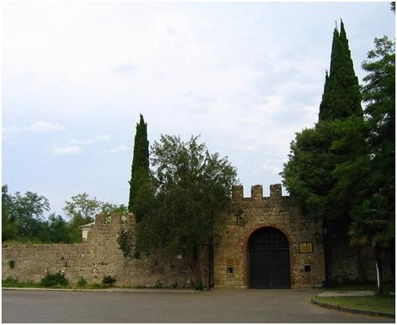
|